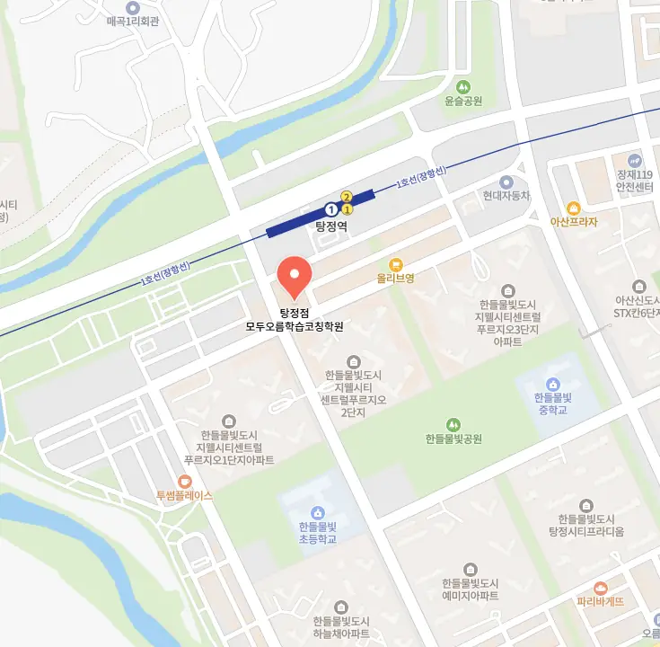

탕정 과학학원
탕정 과학학원
예를 들어, 개념이 부족해서 틀렸는지, 주의 산만으로 실수했는지, 지문의 주장-근거 관계를 잘못 파악했는지를 반드시 기록해야 한다. 탕정 과학학원은 출입구마다 바닥 매트가 있어 먼지 유입 최소화와 같은 방법은 학생들이 학습 환경을 최적화하여, 학습에 긍정적인 영향을 미칠 수 있습니다. 학습은 단지 지식을 쌓는 것이 아니라, 문화적 교류와도 같은 자기 성찰의 과정이다. 진도 초과자가 발생할 경우, 교사는 별도의 피드백 재정비 세션을 운영해 과속 학습의 함정을 경고하고, '이해의 깊이'와 '진도의 속도' 사이의 균형을 강조한다. 탕정 과학학원은 학생이 ‘지금 바로 시작할 수 있는 환경’을 제공받을 때, 심리적 저항은 사라지고 행동의 습관화가 쉬워진다. 학생은 매일 상담하듯이 자신의 상태를 공유하고, 선생님이나 학부모와의 짧은 피드백 시간을 가지면 외로움 없는 학습 환경을 조성할 수 있습니다. 주술 관계를 그대로 두고 문장 길이만 조절하는 기법도 학습에 큰 도움이 됩니다.